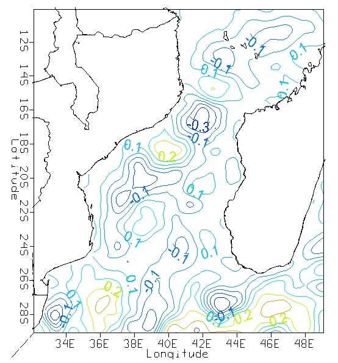

Serviços
Modelação e simulação de processos oceânicos
Nesta secção encontrará resultados de simulações, previsão de marés para alguns portos de Moçambique.

Observação e análise em oceanografia
Métodos de observação e análise de fenómenos oceanográficos, são apresentados incluindo tutoriais e exemplos práticos.

Artigos científicos e projectos em desenvolvimento
Projectos em desenvolvimento, artigos científicos apresentados em conferências e publicados em revistas científicas.